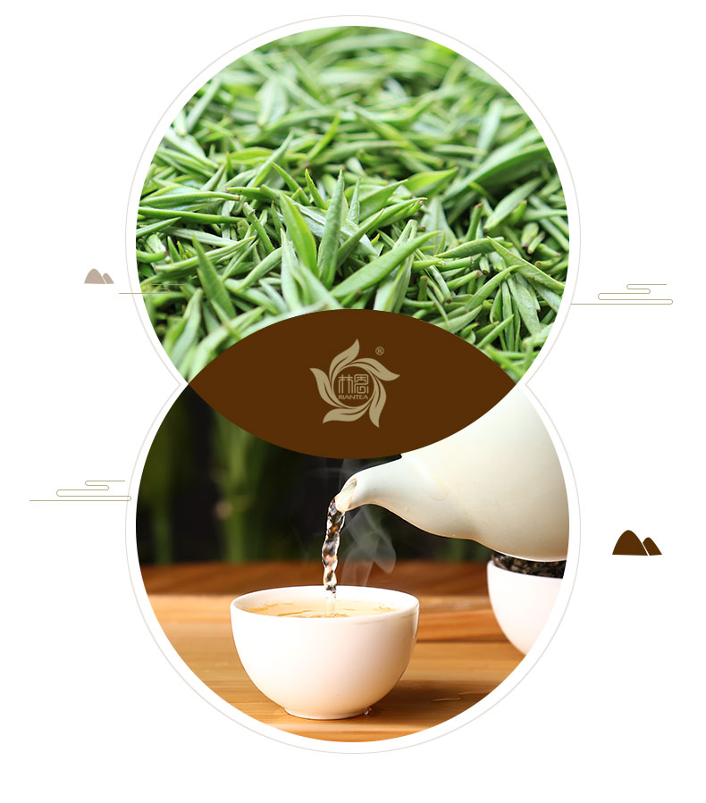
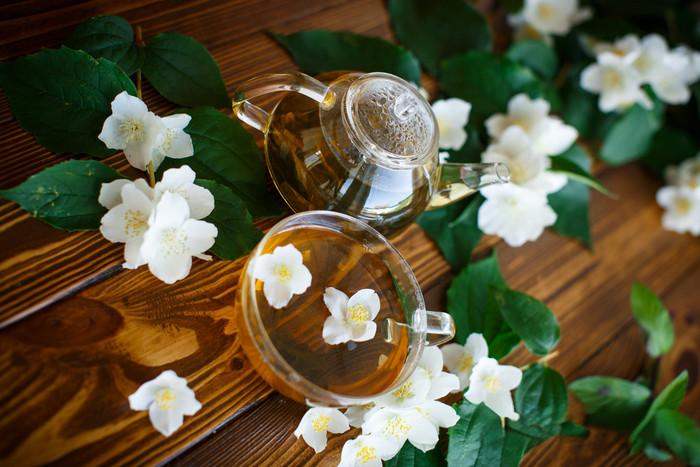
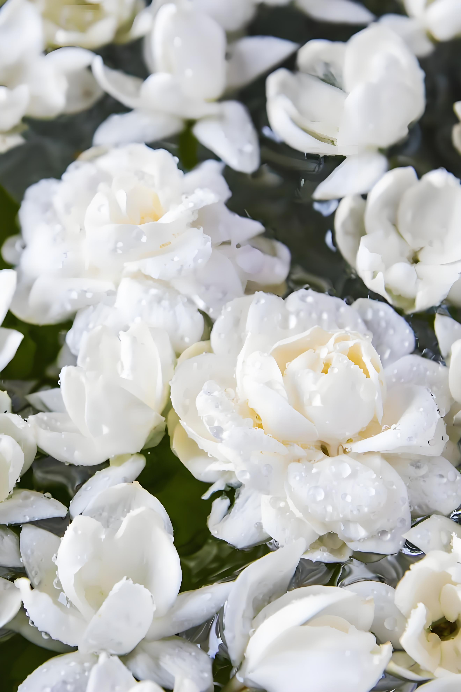

《本草纲目拾遗》记载茉莉花气香味淡，其气上能透顶，下至小腹，解胸中一切陈腐之气，辟秽浊。简单来说就是它可以平肝解郁，理气止痛。茉莉花翠叶光如沃，冰葩淡不妆花朵洁白玉润，香气清婉柔淑，可用于庭院栽培或者摆放赏花。歌曲《茉莉花》是中国民歌，大多数初来中国的外国人学会的第一首中国歌曲往往也是它，这首歌曲已然成为中国文化走向世界的名片。

茉莉花（学名：Jasminum sambac (L.) Aiton），木樨科素馨属直立或攀援灌木植物。茎秆较高，呈圆柱形，中空；叶相对而生为纸质，呈圆形，叶柄较长；花为伞状，花苞较小，呈锥形，花冠白色，呈长圆形；果实球形，黑褐色。茉莉花花期5～8月，果期7～9月。

茉莉花茶（Jasmine Tea），是将茶叶和茉莉鲜花进行拼和、窨制，使茶叶吸收花香而成的茶叶 。又叫茉莉香片，属于花茶，茶坯为绿茶，成品将茉莉花去除，亦属于绿茶的一种，已有1000多年历史。